A nova forma de a IA do Max construir páginas: pelo
objetivo do usuário, não pelo tema.
Amanda Merien e João Cabral · Outubro 2026
O Design.MD guardava um tema por empresa:
cores, fontes e componentes no estilo de uma
marca famosa.
Nenhum desses temas fala sobre estrutura de
venda, funil ou objetivo da página.
Foi o que vimos testando com o design
Captura Autoridade Dark.
Pedindo uma
captura, o Max criou
uma do zero. Não
usou a estrutura nem
o design
cadastrados.
Foi preciso dizer “use
o design Captura
Autoridade Dark do
MD” para ele seguir o
modelo.
Ninguém pede um
design pelo nome. O
trabalho do MD não
chegava ao usuário.
Fundo branco, textos e botão cinza, fontes Bebas Neue
e Inter. Toda página sai com a mesma cara, sem
relação com o nicho ou a oferta.
Se a IA vai usar um padrão, que seja o nosso, com
intenção por trás. Com variações de cada seção, ela
tem muito mais repertório para montar.
Há anos os livros fazem parte da minha jornada. Entre páginas marcadas, reflexões e descobertas, percebi que algumas ideias têm o poder de mudar a forma como pensamos, decidimos e vivemos. O Clube do Livro nasceu dessa busca. Nasceu da vontade de reunir pessoas que valorizam boas ideias, conversas profundas e o crescimento que surge quando diferentes perspectivas se encontram. O verdadeiro valor está nas reflexões, nas trocas e nas conexões que surgem a partir deles. Um espaço para ler com intenção, pensar com profundidade e compartilhar aprendizados que podem transformar a forma como vemos o mundo. E agora esse espaço também pode ser seu.
ENTRAR NO CLUBE DO LIVROO cliente precisa excluir a caixa, o layout tende a
quebrar e depois inserir a imagem do zero. Já testei:
não funciona.
Há anos os livros fazem parte da minha jornada. Entre páginas marcadas, reflexões e descobertas, percebi que algumas ideias têm o poder de mudar a forma como pensamos, decidimos e vivemos. O Clube do Livro nasceu dessa busca. Nasceu da vontade de reunir pessoas que valorizam boas ideias, conversas profundas e o crescimento que surge quando diferentes perspectivas se encontram. O verdadeiro valor está nas reflexões, nas trocas e nas conexões que surgem a partir deles. Um espaço para ler com intenção, pensar com profundidade e compartilhar aprendizados que podem transformar a forma como vemos o mundo. E agora esse espaço também pode ser seu.
ENTRAR NO CLUBE DO LIVROCada seção já vem com um elemento de imagem e
uma imagem padrão da variação. O cliente clica, troca,
e nada quebra.
Sai o catálogo de temas. Entra um sistema de estruturas por tipo de
página, montadas com seções validadas.
Etapa, página e
objetivo
Captura, vendas,
obrigado…
A IA puxa o MD
daquela página
Hero, autoridade,
depoimentos…
Pronta para editar e
publicar
O usuário não precisa saber que o MD existe: a escolha da estrutura acontece por trás, a partir das respostas dele.
Com três respostas, a IA sabe qual
estrutura puxar e consegue orientar
o usuário, em vez de só executar um
pedido solto.
Situa o momento do lançamento, para a página servir àquela fase.
Captura, obrigado, vendas, upsell, checkout, downsell, advertorial ou
termos e privacidade.
Educar o usuário e direcioná-lo ao sucesso da operação, de acordo com
o momento do lançamento.
Nomes e ordem das etapas, e qual
página recomendar em cada uma.
Os mesmos tipos que o usuário já vê
na Clickmax. Cada um ganha o seu MD
de estrutura.
Captura de leads com
formulário
Apresentação de produto
ou serviço
Página de pagamento
Oferta adicional
pós-compra
Oferta alternativa
mais acessível
Confirmação de compra
ou inscrição
Página estilo notícia
ou blog
Políticas, termos e
privacidade
A mesma seção serve a várias estruturas. A cada nova seção validada,
todas as páginas ficam melhores.
Mas ele pode adicionar novas seções
depois que a página for criada.
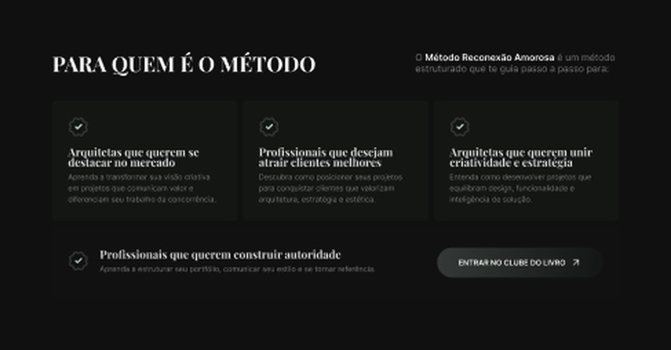
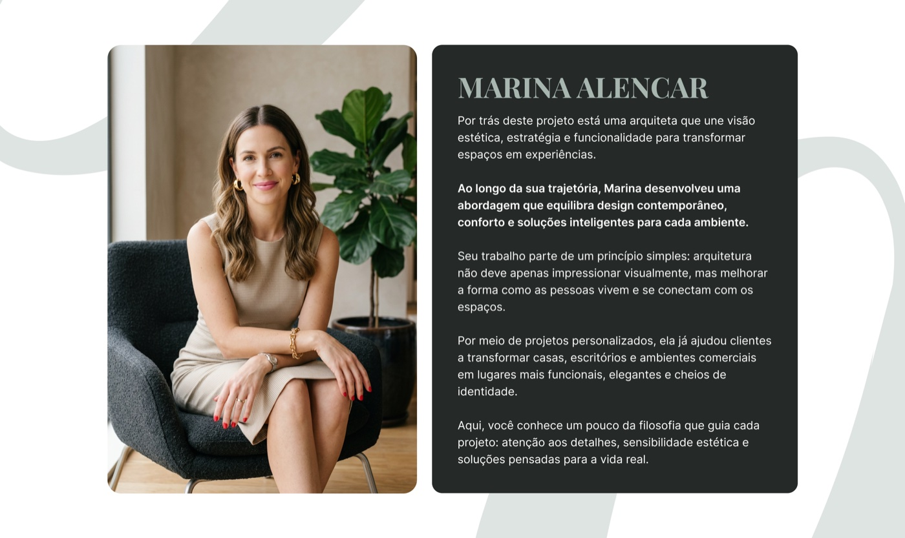
Entende o que é captura, upsell ou
downsell, e quando usar cada um.
A IA monta com seções testadas, não
com páginas inventadas.
A recomendação acompanha
a etapa do lançamento em que
ele está.
Conseguir o contato da pessoa com o
mínimo de distração. Um único CTA.
Levar a pessoa do problema à decisão
de compra, com a oferta clara e as
objeções respondidas.
Cada uma ganha um slide como os de
captura e vendas assim que a estrutura
for fechada.
Confirmação + próximo passo
Resumo da oferta + pagamento
Oferta + aceitar ou recusar
Oferta menor + aceitar ou recusar
Formato de notícia que leva à oferta
Texto legal padronizado
O Cabral está revisando toda a base do que conversamos, porque encontramos problemas na estrutura atual.
As perguntas que a IA do
Max faz antes de construir.
Levar seções e variações para os templates e para o Design.MD.
A IA carrega a estrutura
certa sem o usuário pedir.
Não só com temas como Tesla, McDonald's, BMW e outros, mas com um arsenal
de estruturas para, no futuro, alimentar nossa IA e fazer ela enxergar
ótimos padrões de design.
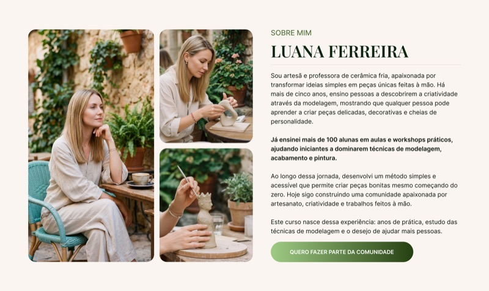
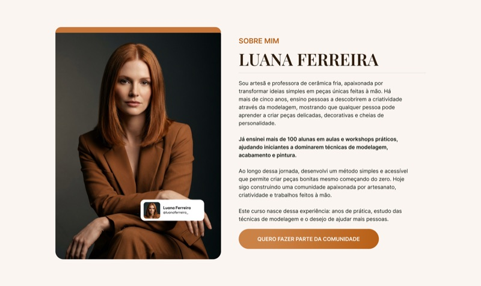
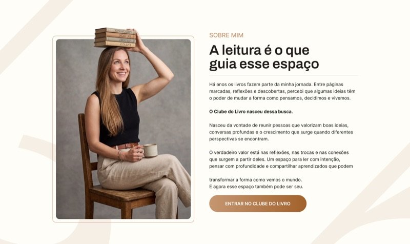
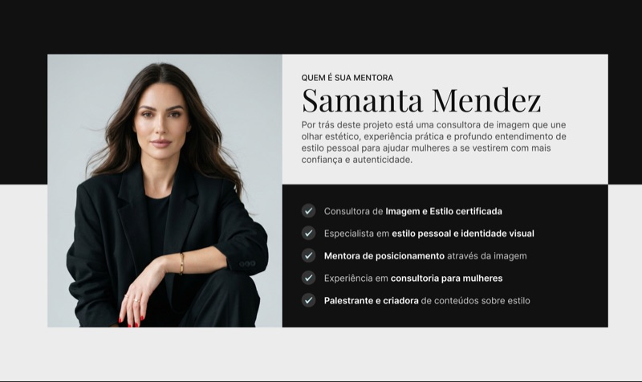
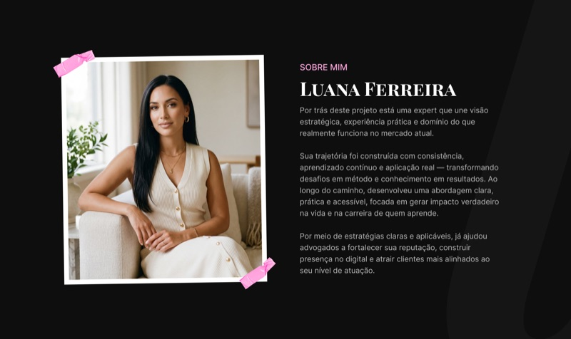
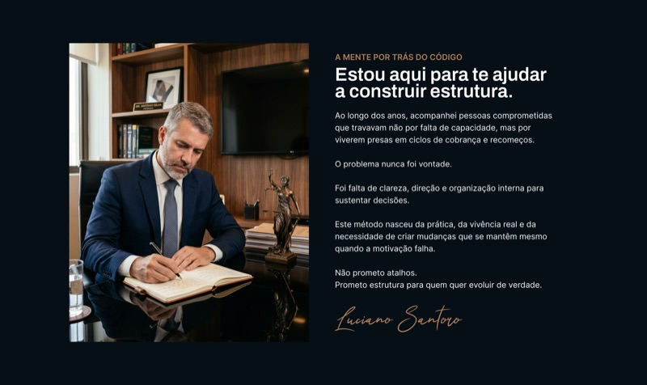
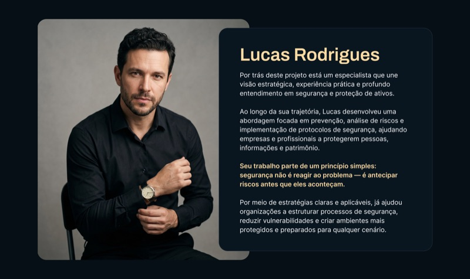
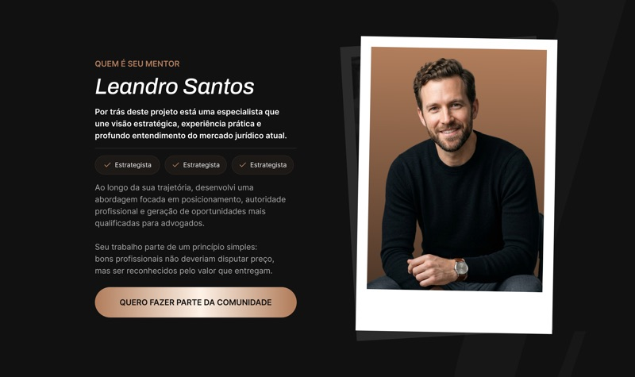
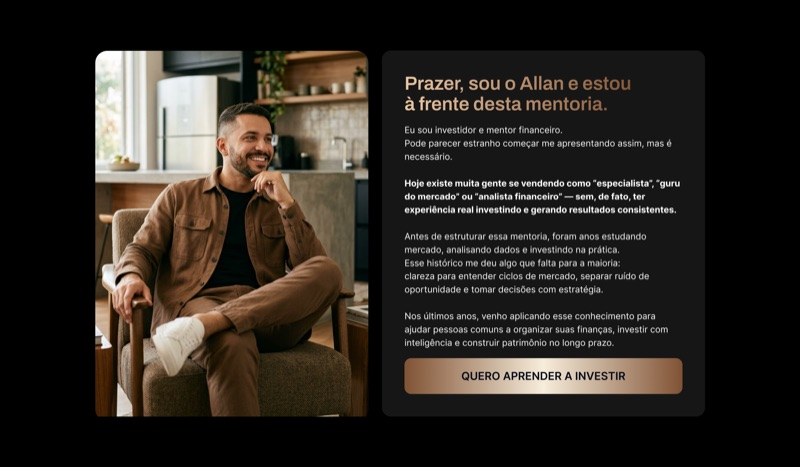
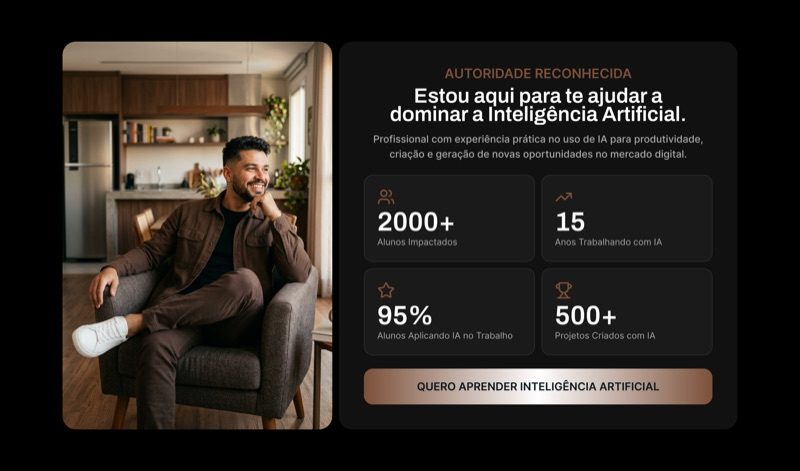
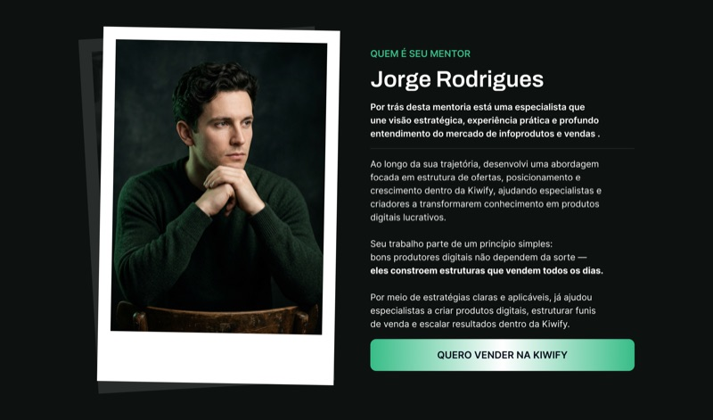
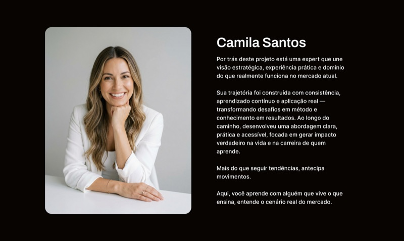